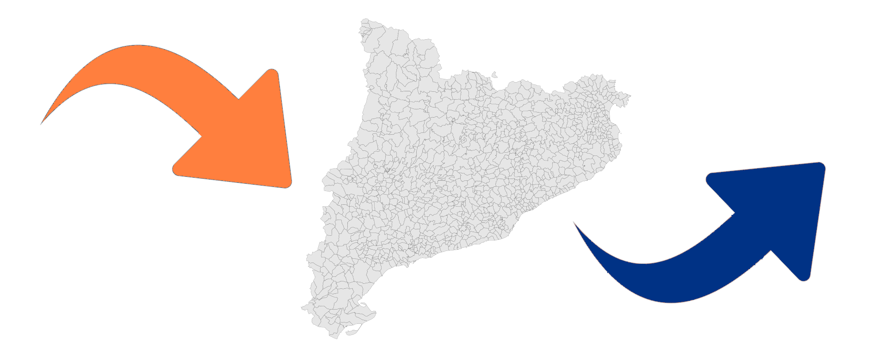

PRÀCTICA, (part 2):
Comerç amb l'exterior: Importacions i exportacions a Catalunya
- Autor: Pere Sauleda Serra
- Assignatura: Màster de ciència de dades UOC: Visualització de dades, juny de 2024
Accés a la visualització
Visualització penjada a GitHub: http://psauleda.github.io/visualitzacio_dades/practica
Taules usades: https://github.com/psauleda/psauleda.github.io/tree/main/visualitzacio_dades/practica/taules_dades
Font de les dades
Fem una visualització sobre el comerç amb l'exterior , en particular les importacions i exportacions catalanes. L'accés a les dades és a través del Portal de dades obertes de la Generalitat de Catalunya i a l’Institut d’Estadística de Catalunya (IDESCAT).
Plantegem un punt de vista temporal o evolutiu, per països i a la vegada, ampliem l’anàlisi per diferents productes o béns, i tipus de transport a través del qual viatgen les mercaderies.
En particular considerem les següents taules:
- Importacions/Exportacions realitzades per Catalunya a nivell mundial.
- Importacions/Exportacions. Per branques d'activitat.
- Importacions/Exportacions. Per destinació econòmica dels béns.
- Importacions/Exportacions de productes industrials. Per contingut tecnològic i grups de productes.
- Comerç amb l'estranger. Per mitjans de transport.
Procés de creació
Per fer aquesta visualització hem triat un conjunt d'eines i tecnologies per tal de preparar les dades en la forma més addient i visualitzar-les atenent a diferents qüestions plantejades.
Hem fet servir:
 pel tractament de les dades
pel tractament de les dades
- Hem fusionat les taules d'importació i exportació en una sola taula, agrupant camps en cas necessari.
- Hem completat la taula de països i hem separat la data en mes i any o trimestre i any.
- Hem afegit algun camp addicional en alguna taula, com ara enllaços a icones o banderes de països.
- Hem reduït per tant el nombre de taules a la meitat. R Studio ens ha per més fer-ho de manera ràpida, obtenint nous fitxers CSV.
Comerç amb l'exterior: Importacions i exportacions catalanes

Visió general de les importacions i exportacions de Catalunya
Evolució del total de les importacions i exportacions en els darrers anys
D'una manera general podem veure les variacions temporals dels totals de les importacions i exportacions.
Ho fem des de diferents punts de vista i amb gràfics de línies. Volem contestar a preguntes com: com han evolucionat les importacions i exportacions en els darrers anys?. Quins anys presenten algun succés rellevant?. Com han variat tenint en compte el mitjà de transport, la destinació econòmica del tipus de bé o pel nivell o contingut tecnològic?
Comencem amb les visualitzacions de l'evolució:

Evolució en funció del transport usat
Considerem els següents mitjans de transport: per carretera, marítim, aèri i ferroviari.

Evolució de les importacions/exportacions per destinació econòmica dels béns
Podem dividir la destinació econòmica dels béns segons:
- Béns de consum:
- Aliments, begudes i tabac
- Altres béns de consum
- Béns de capital:
- Maquinària i altres béns d'equipament
- Material de transport i altres béns de capital
- Béns intermedis:
- Prod. agricultura, silvicultura i pesca
- Prod. energètics i industrials

Evolució de les importacions/exportacions de productes industrials, per contingut tecnològic i grups de productes
En aquest cas podem distingir diferents nivells tecnològics que agrupen diferents productes:
- Nivell tecnològic alt:
- Productes farmacèutics
- Productes informàtics, electrònics i òptics
- Altres
- Nivell tecnològic mitjà alt:
- Productes químics
- Materials i equips elèctrics, maquinària i vehicles
- Altres
- Nivell tecnològic mitjà baix:
- Cautxú i mat. plàstiques, prod. minerals no metàl·lics i metal·lúrgia
- Productes metàl·lics
- Altres
- Nivell tecnològic baix:
- Productes alimentaris, tèxtils, cuir i calçat, fusta i paper
- Altres

Importacions i exportacions en l'àmbit geogràfic
Volem saber quins països tenen comerç amb Catalunya i d'aquests en fem un rànquing del 15 països amb més volum d'inercanvi.
Importacions

Exportacions

Importacions i Exportacions segons les branques d'activitat
Tot seguit comparem els volums de les importacions i exportacions segons la branca d'activitat. Podem comprar a la vegada aquests volums per diferents anys i ordenar de més a menys.

Importacions i Exportacions segons el mitjà de transport
Tot seguit comparem els volums de les importacions i exportacions segons el mitjà de transport en que viatgen les mercaderies.
Ja hem vist abans que els principals mitjans de transport són: per carretera, marítim, aèri i ferroviari.

Importacions i exportacions de productes industrials, per contingut tecnològic i grups de productes
Ja hem vist abans la classificació dels productes industrials segons el nivel tecnològic. Ara volem veure com es distribueixen les importacions i exportacions segons aquesta classificació.
Podem triar l'any per tal de veure els volums de comerç.
Tecnologia: Importacions

Tecnologia: Exportacions

Comentàris addicionals: característiques del joc de dades, preguntes que respon, ...
Característiques més destacades del joc de dades:
- Dades lliures que provenen d'una font fiable
- Dades netes: no requereixen de tractaments i filtrats per eliminar valors absents o nuls, llevat d'algun cas puntual.
- Dades de les importacions i exportacions, compatibles, és a dir, es poden fusionar i agrupar per temes.
- S'han afegit amb un treball addicional, icones de productes i transports i banderes dels països del món.
Preguntes que respon la visualització:
- Com han evolucionat les importacions i exportacions en els darrers anys des d'un punt de vista general, segons el mitjà de transport, el tipus de bé o el nivell tecnològic ?
- Quins anys presenten algun succés rellevant?
- Amb quins països té o ha tingut comerç Catalunya, tenint en compte l'any?
- Quins són els països amb més quantitat de volum d'intercanvi?
- Com són les importacions i exportacions segons la branca d'activitat?
- Amb quins mitjans de transport i qmb quins volums es mouen les mercaderies?
- Com es distribueixen les importacions i exportacions segons el nivell tecnològic dels productes industrials?
Gràfiques, visualitzacions i elements interactius que s'ha usat:
- Gràfiques de línies interacitives.
- Mapa interactiu.
- Gràfiques de barres verticals interactives.
- Gràfiques de barres horitzontals senzilles i acumulatives interactives.
- Gràfiques Pie charts, (donuts) interactius.
Reflexió: què he après del conjunt de dades? Què he après de les tècniques utilitzades? Què m'hauria agradat fer i no podia? :
- Hem treballat amb un conjunt de dades que ens ha donat una visió general i detallada de les importacions i exportacions de Catalunya i la seva variació amb el temps.
- Hem fet servir R Studio i Tableau Public. La primera per ordenar dades de manera que ens facilita la feina i la segona és una eina potent per fer visualitzacions bastant configurables.
- Hagués estat bé afegir un disseny més atractiu i usar altres eines més lliures i configurables per les visualitzacions, (un nivell més de JavaScript).